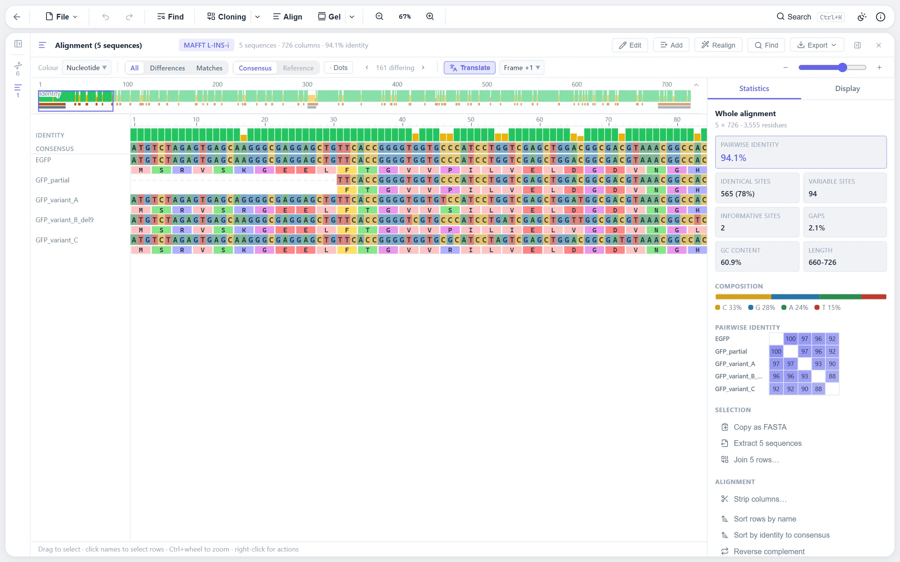

The engines
Multiple alignment runs MAFFT, MUSCLE or Kalign: the WebAssembly builds of the real tools, one job per worker so a job can be cancelled. MAFFT runs as tbfast, which does the pairwise stage, the progressive alignment and sixteen rounds of iterative refinement itself, with the three iterative-refinement strategies the MAFFT script offers:
| Strategy | Best when |
|---|---|
| L-INS-i | The sequences share one alignable domain with unalignable ends |
| G-INS-i | They are similar over their whole length |
| E-INS-i | Several conserved domains are separated by long unalignable regions |
Automatic uses the built-in pairwise aligner for exactly two sequences, MAFFT L-INS-i when its estimated running time is 20 seconds or less, and Kalign otherwise. The estimate comes from timing the builds on one thread and is good to a factor of two or three, which is enough to warn before starting something that will take minutes, which the dialog does.
Rows are sent to the tool under short generated names, because names with spaces, odd characters or duplicates can confuse the tools, and are put back in input order whatever order the tool writes them in. Every row is checked to have come back with exactly its residues, so a tool that dropped or changed one cannot slip a wrong alignment through. A fresh instance is started for every run, which costs milliseconds against seconds of alignment.

An alignment is a document you own
An alignment is a stack of gapped rows that you edit. A row is a copy: it remembers which sequence it came from, for display, but editing it never reaches back into the source, and the source changing never reaches into the alignment. Extracting a row as a sequence is the way out. Every row is the same length and the document stays rectangular. How the alignment came to be, the engine and strategy or the file it was imported from, is kept with it, for display and for realigning.
Display settings live outside the undo history, since changing the colours is not an edit, and are saved with the alignment.
- Colour schemes. Some colour a residue by what it is (Zappo, Taylor, nucleotides); others by its column, where Clustal X colours a residue only when its column is conserved enough, percent identity shades by how many rows share it, and BLOSUM62 compares with the consensus. The palette is blended into the theme's canvas colour, so one set of colours reads on light and dark themes.
- Tracks. Consensus with an adjustable threshold, identity and similarity graphs, a sequence logo and conservation marks, all read off the column profile.
- Translation. A DNA alignment can show a translation strip or colour bases by the amino acid they encode. Each row is read from its own first residue in the chosen frame, skipping gaps, so a codon can straddle a gap. A gap run inside the coding stretch whose length is not a multiple of three shifts the frame for the rest of that row, and those runs and any internal stops are reported, since they are usually errors to correct.
- Search. A motif is searched in each row without its gaps, so a motif split by a gap is still found, and reported as the columns it spans.
How identity is counted
Mean pairwise identity for a selection is computed from the column counts rather than by comparing every pair of rows, so the statistics stay linear in the size of the selection and update on every edit. A row's end gaps, before its first residue and after its last, are missing data rather than differences: a partial sequence has nothing there to compare, so pairs with a row in its end gaps are left out. A stretch that matches a longer sequence base for base is therefore 100 % identical to it, where counting the end columns as gaps would put a 660 bp piece of EGFP at 91 %. A residue against a gap inside a row still counts as a difference. The same rule gives the identity graph, the identity matrix and the figure shown with each alignment in the explorer.
The built-in pairwise algorithms
These are plain TypeScript with no dependencies, and they are what runs for two sequences.
- Needleman-Wunsch for global alignment: the standard three-matrix dynamic program for affine gaps. Above 100 million cells it switches to Hirschberg's divide and conquer, which gives the same optimal alignment in linear memory, so sequences of about 22 kb can be aligned globally without exhausting the browser.
- Smith-Waterman for local alignment: the full dynamic program up to 50 million cells, then a three-pass linear-memory approach that finds the best score and end in linear memory, finds the start in a reverse pass, and runs the full dynamic program only over the bounded region.
- Seeded Smith-Waterman for a short query against a genome. A k-mer index of the reference is built, seeds from the query are chained along diagonals, and Smith-Waterman runs only on a bounded region around the best chain. This turns a 4 kb against 4.6 Mb alignment into a hash lookup plus a small alignment. Highly repetitive k-mers are skipped to bound memory.
Scoring is configurable match and mismatch scores for DNA, BLOSUM62 for protein, and an affine gap model with separate open and extend penalties.
| Case | Strategy | Up to about |
|---|---|---|
| Global pairwise | Full matrix or Hirschberg | 22 kb x 22 kb |
| Local pairwise, small | Full matrix | 7 kb x 7 kb |
| Local pairwise, large | Linear memory | 50 kb x 50 kb |
| Local pairwise against a genome | Seed and extend | 4 kb x 5 Mb and beyond |
Editing, realigning and exporting
Gaps can be inserted and deleted, blocks selected by dragging across cells, columns selected along the ruler, and rows selected by their names. Sequences can be added to an existing alignment and the whole realigned with the engine it remembers. The alignment exports as Clustal, PHYLIP, NEXUS and FASTA, and as a figure: pick the region, the line width, the tracks and the size, see it, then save SVG, PNG or PDF with the colours, highlighting and translation the current view has.
Where to find it
Select two or more sequences in the explorer and choose Align, or open the alignment dialog from the Tools menu. Serve the folder rather than opening the editor from disk: over file:// the page cannot load the WebAssembly tools, so only the built-in pairwise aligner runs, and the dialog says so rather than starting a job that cannot finish.
Limits
- Over file:// only the built-in pairwise aligner is available. Serve the folder for MAFFT, MUSCLE and Kalign.
- A global alignment too large for Hirschberg is refused with an error rather than attempted.
- The running-time estimate that drives the automatic choice is good to a factor of two or three.
- Profile alignment in the built-in progressive aligner scores two columns as the average of all pairwise residue scores, which is simpler than the tools' own objective functions.
References
- Katoh K, Standley DM (2013) MAFFT multiple sequence alignment software version 7. Mol Biol Evol 30:772-780.
- Edgar RC (2022) Muscle5: high-accuracy alignment ensembles enable unbiased assessments of sequence homology and phylogeny. Nat Commun 13:6968.
- Lassmann T (2020) Kalign 3: multiple sequence alignment of large data sets. Bioinformatics 36:1928-1929.
- Needleman SB, Wunsch CD (1970) A general method applicable to the search for similarities in the amino acid sequence of two proteins. J Mol Biol 48:443-453.
- Smith TF, Waterman MS (1981) Identification of common molecular subsequences. J Mol Biol 147:195-197.
- Hirschberg DS (1975) A linear space algorithm for computing maximal common subsequences. Commun ACM 18:341-343.
- Henikoff S, Henikoff JG (1992) Amino acid substitution matrices from protein blocks. Proc Natl Acad Sci USA 89:10915-10919.